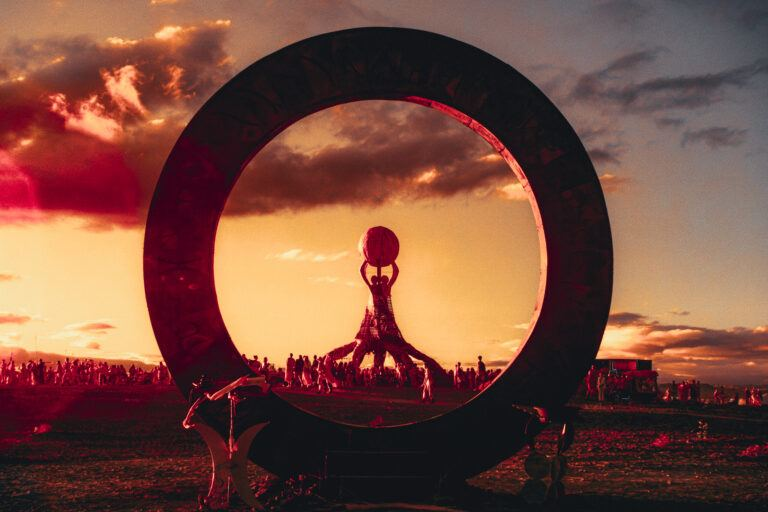

Festivals · Arts
AfrikaBurn 2027 (The Big Question)
- Dates
- –
- Venue
- Tankwa Town (Quaggafontein), Tankwa Karoo
- Location
- Tankwa Karoo, South Africa
- Format
- In-person
- Category
- Arts
- Industry
- Participatory arts / regional burn
- Organiser
- AfrikaBurns Creative Projects NPC
- Price
- Standard Ground Up ticket R3,499 (7,500 available); New Horizon ticket R5,499 (includes a R2,000 donation; 2,500 available). Subsidised / Ground Up Access / Anathi / pensioner programmes are also offered on the official ticket site and are not used for the min/max.
- Official website
- https://www.afrikaburn.org/
- Tickets
- https://tickets.afrikaburn.org/
About
2027 theme: The Big Question. Official site also styles the dates as 'April 26 – May 2 2027'. Burning Man regional event in the Tankwa Karoo. South Africa dates are local (SAST, UTC+2, no daylight saving).
Topics: participatory art, theme camps, radical self-expression, burning man regional.
No published organiser attendance count for a recent edition was found on the official pages checked (24 Nov 2026). The official ticket page lists 7,500 Ground Up and 2,500 New Horizon tickets plus smaller access programmes (a capacity clue around 10,000, not used as an attendance figure). Ranked by an estimated size tier 'large' (about 10,000–100,000; our judgement from ticket allocations, format and scale, not an official number).